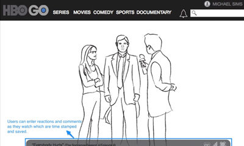
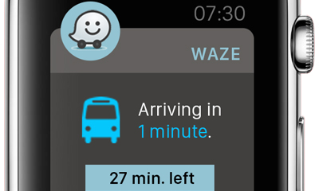
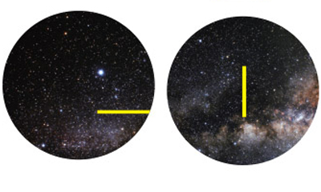
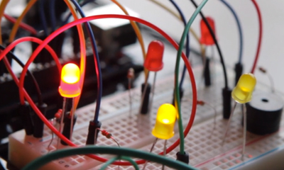
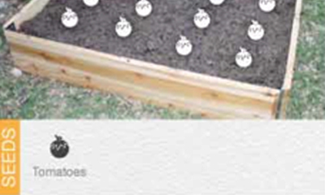
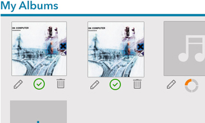
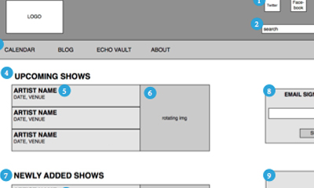
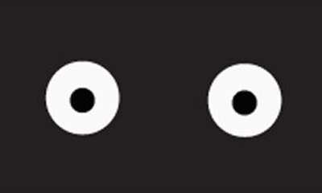

Hello! My name is Ana Khachatrian and I am a Los Angeles based User Experience Designer with a passion for creating experiences that will enhance or improve users' lives. I try to approach every problem with an open and curious mind. My process includes research, sketching, wireframing, prototyping, and user testing; but most importantly, asking, What if...

HBOGO: UX Strategy & Redesign

Waze: Interactive Branding Experience

Griffith Observatory: Interactive Branding Experience

Rock-Paper-Scissors: Arduino Project

Sprout: Mobile App Design

Audiolife: Product Design

The Echo & Echoplex: Website Redesign
